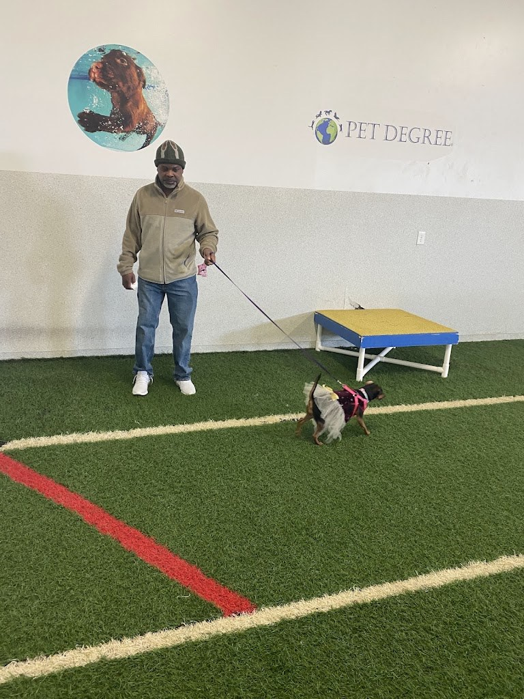
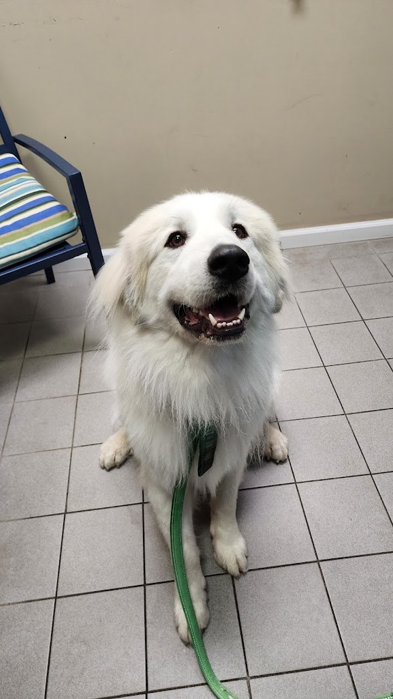
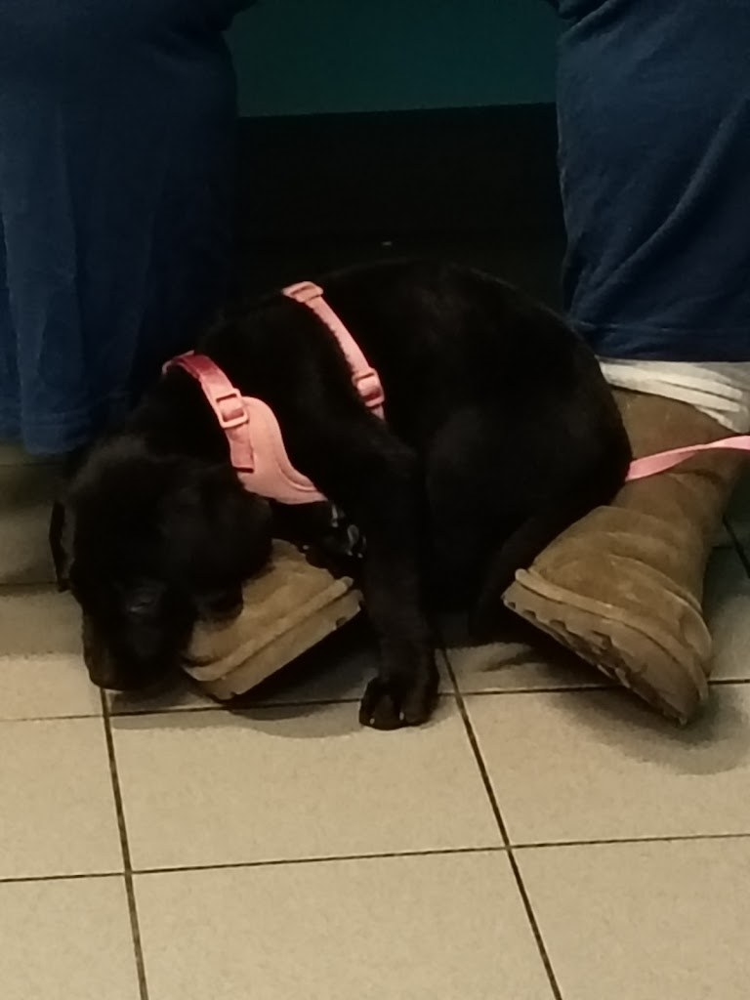

Dog and cat boarding
Boarding for dogs and cats in Buffalo.
Dog and Cat Boarding and Daycare, Buffalo NY
Dog and cat boarding and doggy daycare in Buffalo, with cat services, basic check-ups and vaccinations, and blood tests.

Boarding for dogs and cats in Buffalo.
Doggy daycare, Monday through Friday 8:00 AM to 5:00 PM.
Cat services, including boarding for cats alongside the dog daycare.
Basic check-up and vaccinations, listed on the Google profile.
Blood tests, listed on the Google profile.
Pet Degree is a dog and cat boarding and daycare business at 2055 Clinton St in Buffalo, New York. Services include dog and cat boarding, doggy daycare, cat services, basic check-up and vaccinations, and blood tests. Pet Degree shares photos of its boarding and daycare guests on Instagram. Hours are Monday through Friday, 8:00 AM to 5:00 PM; Saturday, 8:00 AM to 3:00 PM. Call (716) 508-7387 to ask about boarding or daycare.
Pet Degree shares photos of its boarding and daycare guests on Instagram. Call (716) 508-7387 to ask about boarding or daycare.


All three photos are real photos from the business's Google Maps listing. They show a man walking a small dog on the indoor artificial turf with the PET DEGREE logo on the wall, a large fluffy white dog on a green leash, and a black dog in a pink harness lying on the tiled floor.
Address: 2055 Clinton St, Buffalo, NY
Hours: Monday through Friday, 8:00 AM to 5:00 PM; Saturday, 8:00 AM to 3:00 PM.
Phone: (716) 508-7387
Pet Degree serves Buffalo, NY. Questions? Call (716) 508-7387.